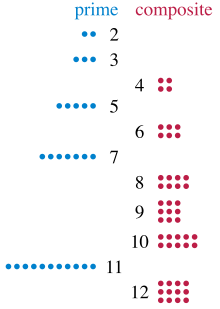

The result will be shown here.
A prime number is a number in which its factors are 1 and the number itself. To learn more about prime numbers, go to https://en.wikipedia.org/wiki/Prime_number.
Another method of finding prime numbers is this.
Composite numbers can be grouped into squares or rectangles but prime numbers cannot.